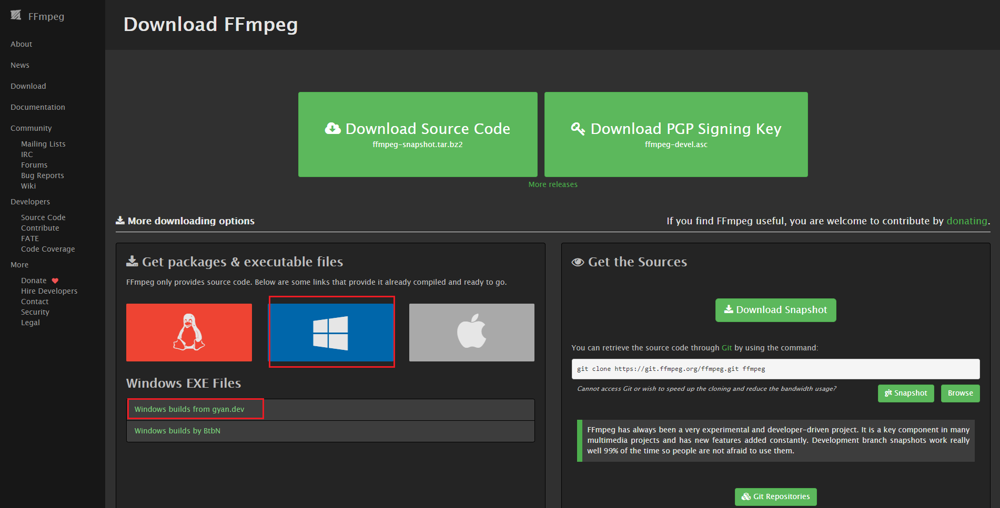
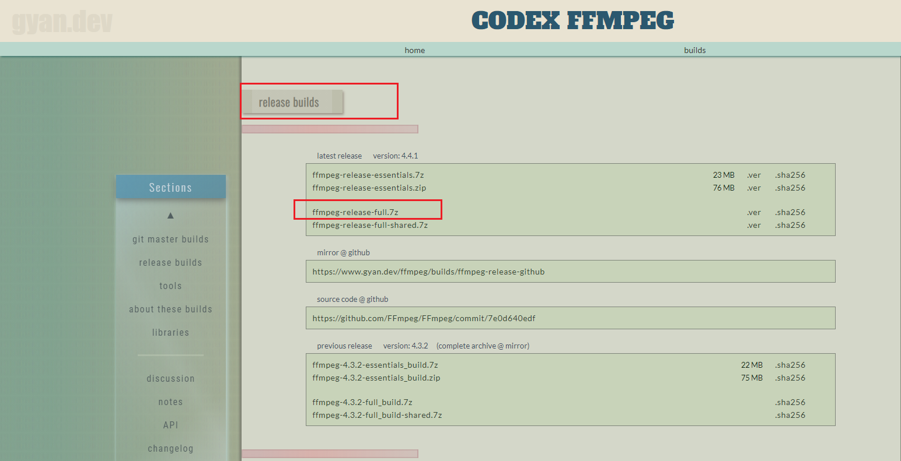
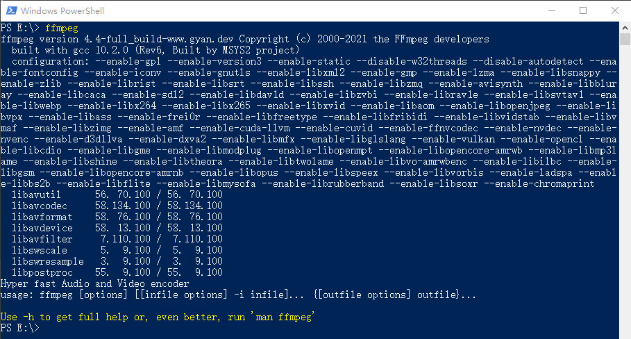

ffmpeg 这家伙大名鼎鼎啊👍👍👍。官网介绍：A complete, cross-platform solution to record, convert and stream audio and video.
这里选择的是gyan.dev的发布版本，如下图：


当时下载的版本为：ffmpeg-4.4-full_build.7z，现在是：ffmpeg-4.4.1-full_build.7z。后面没有说明都是在版本4.4的基础上弄的。
下载完成之后解压即可，这里解压位置是：

先占个位置……
怎么把自己拍的n多照片利用起来？合成一个视频怎么样，在添加点描述，在来点音乐……太棒了😄😄😄
我们先来个简单的，先弄一张图片，循序渐进……
# 最简的命令 ffmpeg -i 1-1.jpg input_one_pic_1.mp4
最简的命令：输入一张图片，输出一个视频，视频的时长为0。
上面的命令（或者之后的命令）都是在图片所在的文件夹打开的命令行（这里使用的是：Windows PowerShell）执行的。
# 添加循环输入、时间 ffmpeg -loop 1 -t 5 -i 1-1.jpg input_one_pic_2.mp4
输出视频的时长为5s。
# 添加音频输入 ffmpeg -loop 1 -t 5 -i 1-1.jpg -i 1.mp3 input_one_pic_3.mp4
mp3的时长为4分26秒，输出视频的时长也是。这张图片一直存在。
# 在上面的基础上删除循环和时间 ffmpeg -i 1-1.jpg -i 1.mp3 input_one_pic_4.mp4
输出视频的时长和上面相同，图片也一直存在，但是文件大小要比上一个小。
一张图片转视频没有什么意义（即使是添加了音频），不好看也太单调了。本来的想法是先按照拼接的方式来实现多张图片转视频，但是这种实现方式一路坎坷……倒是利用文件的方式很快就实现了，那就先说一下他吧！他有很多优点：缩短命令、忽略图片分辨率等。下面就看一下这种实现方式：
# 最简的命令
ffmpeg -f concat -i index.txt input_file_1.mp4
index.txt文件中的内容如下：
file '1-1.jpg'
duration 5
file '1-2.jpg'
duration 5
file '1-3.jpg'
最简的命令，将输入文件之间的拼接放到了txt文件中，这样以来整体命令缩短了很多。这里还屏蔽一个图片分辨率的问题，在使用纯命令拼接时，如果图片的分辨率不一致会报错（暂时没有找到解决办法），但是这种方式没有这个问题。
# 音频输入
ffmpeg -f concat -i index.txt -i 1.mp3 input_file_2.mp4
在这种情况下，暂时没有找到添加过度动画的方法……
上面介绍了利用txt文件将多张图片转视频，这里介绍一下拼接的方式，虽然道路很曲折，但是结果还不错……
参考单张图片转视频的模式，写出了下面的命令，都不太理想，不是想要的……
# 1、输入多张图片 =》视频时长0s（只有第一张照片，和 input_one_pic_1.mp4 的效果一样） ffmpeg -i 1-1.jpg -i 1-2.jpg -i 1-3.jpg input_multi_pic_1.mp4 # 2、和上面的结果相同 ffmpeg -f image2 -i 1-1.jpg -i 1-2.jpg -i 1-3.jpg input_multi_pic_2.mp4 # 3、视频时长5s，但是只有第一张图片 ffmpeg -loop 1 -t 5 -i 1-1.jpg -loop 1 -t 5 -i 1-2.jpg -loop 1 -t 5 -i 1-3.jpg input_multi_pic_3.mp4 # 4、和上面的结果相同 ffmpeg -f image2 -loop 1 -t 5 -i 1-1.jpg -loop 1 -t 5 -i 1-2.jpg -loop 1 -t 5 -i 1-3.jpg input_multi_pic_4.mp4 # 5……
多张图片转视频尝试了很多，也持续了很长时间，甚至使用文件名称通配符、放在一个txt文件中、添加动画的情况下都搞定了，但是像上面这种拼接的方式也没有搞定……直到今天终于找到了怎么实现，才开始写这篇文章。参考链接
# 参考命令，来自：https://superuser.com/questions/1347687/ffmpeg-merge-images-with-video
ffmpeg -y \
-loop 1 -framerate 24 -t 10 -i default_start.png \
-i output-first.mp4 \
-loop 1 -framerate 24 -t 10 -i default_end.png \
-f lavfi -t 3 -i anullsrc \
-filter_complex "[0:v] [3:a] [1:v] [1:a] [2:v] [3:a] concat=n=3:v=1:a=1 [v] [a]" \
-c:v libx264 -c:a aac -map "[v]" -map "[a]" output-second.mp4
参照上面的命令，逐次修改，得到了精简的命令和想要的结果😄😄😄
# 注意这里使用的是Windows PowerShell，不同的命令行换行符可能不同
# 下面的命令，两个``之间的内容都变成红色了
# 1、第一次修改，最谨慎，改动最小
ffmpeg -y `
-loop 1 -framerate 24 -t 3 -i 1-1.jpg `
-loop 1 -framerate 24 -t 3 -i 1-3.jpg `
-loop 1 -framerate 24 -t 3 -i 1-4.jpg `
-f lavfi -t 1 -i anullsrc `
-filter_complex "[0:v] [3:a] [1:v] [3:a] [2:v] [3:a] concat=n=3:v=1:a=1 [v] [a]" `
-c:v libx264 -c:a aac -map "[v]" -map "[a]" input_multi_pic_good_1.mp4
# 2、删除 -framerate 24 -c:v libx264 -c:a aac 配置
ffmpeg -y `
-loop 1 -t 3 -i 1-1.jpg `
-loop 1 -t 3 -i 1-3.jpg `
-loop 1 -t 3 -i 1-4.jpg `
-f lavfi -t 1 -i anullsrc `
-filter_complex "[0:v] [3:a] [1:v] [3:a] [2:v] [3:a] concat=n=3:v=1:a=1 [v] [a]" `
-map "[v]" -map "[a]" input_multi_pic_good_2.mp4
# 3、删除 -map "[a]" 相关；删除 -f lavfi -t 1 -i anullsrc
ffmpeg -y `
-loop 1 -t 3 -i 1-1.jpg `
-loop 1 -t 3 -i 1-3.jpg `
-loop 1 -t 3 -i 1-4.jpg `
-filter_complex "[0:v] [1:v] [2:v] concat=n=3:v=1 [v]" `
-map "[v]" input_multi_pic_good_3.mp4
#` 4、删除 -y
ffmpeg `
-loop 1 -t 3 -i 1-1.jpg `
-loop 1 -t 3 -i 1-3.jpg `
-loop 1 -t 3 -i 1-4.jpg `
-filter_complex "[0:v] [1:v] [2:v] concat=n=3:v=1 [v]" `
-map "[v]" input_multi_pic_good_4.mp4
# 添加音频输入，该命令没有达到预期效果，没有音频
ffmpeg `
-loop 1 -t 3 -i 1-1.jpg `
-loop 1 -t 3 -i 1-3.jpg `
-loop 1 -t 3 -i 1-4.jpg `
-i 1.mp3 `
-filter_complex "[0:v] [1:v] [2:v] concat=n=3:v=1 [v]" `
-map "[v]" input_multi_pic_good_5.mp4
本以为挺简单的，添加之后直接废了，生成是生成视频了，但是没有音频。又开始查了……这次倒是挺幸运，很快就查到了，参考链接
# 参考命令，来自：https://shotstack.io/learn/use-ffmpeg-to-convert-images-to-video/
ffmpeg \
-loop 1 -t 5 -i happy1.jpg \
-loop 1 -t 5 -i happy2.jpg \
-loop 1 -t 5 -i happy3.jpg \
-loop 1 -t 5 -i happy4.jpg \
-loop 1 -t 5 -i happy5.jpg \
-loop 1 -t 5 -i happy6.jpg \
-i freeflow.mp3 \
-filter_complex \
"[0:v]scale=1280:720:force_original_aspect_ratio=decrease,pad=1280:720:(ow-iw)/2:(oh-ih)/2,setsar=1,fade=t=out:st=4:d=1[v0];
\
[1:v]scale=1280:720:force_original_aspect_ratio=decrease,pad=1280:720:(ow-iw)/2:(oh-ih)/2,setsar=1,fade=t=in:st=0:d=1,fade=t=out:st=4:d=1[v1];
\
[2:v]scale=1280:720:force_original_aspect_ratio=decrease,pad=1280:720:(ow-iw)/2:(oh-ih)/2,setsar=1,fade=t=in:st=0:d=1,fade=t=out:st=4:d=1[v2];
\
[3:v]scale=1280:720:force_original_aspect_ratio=decrease,pad=1280:720:(ow-iw)/2:(oh-ih)/2,setsar=1,fade=t=in:st=0:d=1,fade=t=out:st=4:d=1[v3];
\
[4:v]scale=1280:720:force_original_aspect_ratio=decrease,pad=1280:720:(ow-iw)/2:(oh-ih)/2,setsar=1,fade=t=in:st=0:d=1,fade=t=out:st=4:d=1[v4];
\
[5:v]scale=1280:720:force_original_aspect_ratio=decrease,pad=1280:720:(ow-iw)/2:(oh-ih)/2,setsar=1,fade=t=in:st=0:d=1,fade=t=out:st=4:d=1[v5];
\
[v0][v1][v2][v3][v4][v5]concat=n=6:v=1:a=0,format=yuv420p[v]" -map "[v]" -map 6:a -shortest output7.mp4
参照上面的命令以及多张图片转视频时的成功经验，很快就成功了。
# 该命令达到了预期效果，视频时长和音频时长相同，只是图片的累计循环时长小于音频时长，所以最后画面停留在了最后一张图片
ffmpeg `
-loop 1 -t 3 -i 1-1.jpg `
-loop 1 -t 3 -i 1-3.jpg `
-loop 1 -t 3 -i 1-4.jpg `
-i 1.mp3 `
-filter_complex "[0:v] [1:v] [2:v] concat=n=3:v=1:a=0 [v]" `
-map "[v]" -map 3:a input_multi_pic_good_6.mp4
至此多张图片转视频基本上算是完成了，但是此时你会看到视频中图片与图片之间的切换不是很好，要是能添加点动画就完美了……点击查看支持的动画
# 参照上面例子的第一个实现（需要注意duration和offset，以及最后生成视频的时长）
ffmpeg `
-loop 1 -t 5 -i 1-1.jpg `
-loop 1 -t 5 -i 1-3.jpg `
-filter_complex "[0][1]xfade=transition=wiperight:duration=3:offset=2,format=yuv420p" `
input_multi_pic_animation_1.mp4
每张图片的循环时间是5s，如果不添加过滤动画，那么视频的时长是10s。这里使用了过度动画，最后生成的视频时长是7s。那这7s是如何得出的，为了达到我们想要的视频效果，图片的循环时间、动画的duration和offset ……下面再看几个例子，希望可以得到答案。
# 使用这个命令生成的视频时长为10s。
ffmpeg `
-loop 1 -t 5 -i 1-1.jpg `
-loop 1 -t 8 -i 1-3.jpg `
-filter_complex "[0][1]xfade=transition=wiperight:duration=3:offset=2,format=yuv420p" `
input_multi_pic_animation_2.mp4
# 使用这个命令生成的视频时长为12s。
ffmpeg `
-loop 1 -t 5 -i 1-1.jpg `
-loop 1 -t 8 -i 1-3.jpg `
-loop 1 -t 5 -i 1-4.jpg `
-filter_complex "
[0][1]xfade=transition=wipeleft:duration=3:offset=2[f1];
[f1][2]xfade=transition=wiperight:duration=3:offset=7
,format=yuv420p[v]
" -map "[v]" input_multi_pic_animation_3.mp4
# 使用这个命令生成的视频时长为17s。
ffmpeg `
-loop 1 -t 5 -i 1-1.jpg `
-loop 1 -t 8 -i 1-3.jpg `
-loop 1 -t 8 -i 1-4.jpg `
-loop 1 -t 5 -i 1-5.jpg `
-filter_complex "
[0][1]xfade=transition=wipeleft:duration=3:offset=2[f1];
[f1][2]xfade=transition=wiperight:duration=3:offset=7[f2];
[f2][3]xfade=transition=wipeup:duration=3:offset=12
,format=yuv420p[v]
" -map "[v]" input_multi_pic_animation_4.mp4
# 使用这个命令生成的视频时长为17s。（在上面的基础上添加音频）
ffmpeg `
-loop 1 -t 5 -i 1-1.jpg `
-loop 1 -t 8 -i 1-3.jpg `
-loop 1 -t 8 -i 1-4.jpg `
-loop 1 -t 5 -i 1-5.jpg `
-i 1.mp3 `
-filter_complex "
[0][1]xfade=transition=wipeleft:duration=3:offset=2[f1];
[f1][2]xfade=transition=wiperight:duration=3:offset=7[f2];
[f2][3]xfade=transition=wipeup:duration=3:offset=12
,format=yuv420p[v]
" -map "[v]" -map 4:a input_multi_pic_animation_5.mp4
弄了几个例子，也大概发现了一些规律。下面是我的理解：动画持续时间（duration）是两张图片共同占有，相交的时间，也可以理解成后一张图片提前duration的时间；偏移（offset）是从哪一个时间点开始。不知道理解对不对😓😓😓，这几个看着没有问题。视频时长=(loop1+loop2+……+loopn)-(duration1+duration2+……+durationn-1)。
采用拼接的方式，如果涉及到的图片的分辨率不一致就会报错。之后就是一顿查询……参考链接1参考链接2
先看一下参考命令：
# 参照命令-》分辨率的问题 ffmpeg \ -loop 1 -t 5 -i 1.png \ -loop 1 -t 5 -i 2.png \ -loop 1 -t 5 -i 3.png \ -loop 1 -t 5 -i 4.png \ -loop 1 -t 5 -i 5.png \-filter_complex " [0]scale=-2:720,pad=1280:720:(ow-iw)/2:(oh-ih)/2,setsar=1,fade=d=1:t=in:alpha=1,fade=t=out:st=4:d=1,setpts=PTS-STARTPTS+4/TB[f0]; [1]scale=-2:720,pad=1280:720:(ow-iw)/2:(oh-ih)/2,setsar=1,fade=d=1:t=in:alpha=1,fade=t=out:st=4:d=1,setpts=PTS-STARTPTS+8/TB[f1]; [2]scale=-2:720,pad=1280:720:(ow-iw)/2:(oh-ih)/2,setsar=1,fade=d=1:t=in:alpha=1,fade=t=out:st=4:d=1,setpts=PTS-STARTPTS+12/TB[f2]; [3]scale=-2:720,pad=1280:720:(ow-iw)/2:(oh-ih)/2,setsar=1,fade=d=1:t=in:alpha=1,fade=t=out:st=4:d=1,setpts=PTS-STARTPTS+16/TB[f3]; [4]scale=-2:720,pad=1280:720:(ow-iw)/2:(oh-ih)/2,setsar=1,fade=d=1:t=in:alpha=1,fade=t=out:st=4:d=1,setpts=PTS-STARTPTS+20/TB[f4]; [f0][f1]overlay[bg1]; [bg1][f2]overlay[bg2]; [bg2][f3]overlay[bg3]; [bg3][f4]overlay,format=yuv420p[v] " -map [v] -movflags +faststart -y out.mp4
再看一下参考实现
# 实现1 ffmpeg ` -loop 1 -t 5 -i 1-1.jpg ` -loop 1 -t 5 -i 1-2.jpg ` -loop 1 -t 5 -i 1-3.jpg ` -loop 1 -t 5 -i 1-4.jpg ` -filter_complex "` [0]scale=-2:720,pad=1280:720:(ow-iw)/2:(oh-ih)/2,setsar=1,fade=d=1:t=in:alpha=1,fade=t=out:st=4:d=1,setpts=PTS-STARTPTS+4/TB[f0]; [1]scale=-2:720,pad=1280:720:(ow-iw)/2:(oh-ih)/2,setsar=1,fade=d=1:t=in:alpha=1,fade=t=out:st=4:d=1,setpts=PTS-STARTPTS+8/TB[f1]; [2]scale=-2:720,pad=1280:720:(ow-iw)/2:(oh-ih)/2,setsar=1,fade=d=1:t=in:alpha=1,fade=t=out:st=4:d=1,setpts=PTS-STARTPTS+12/TB[f2]; [3]scale=-2:720,pad=1280:720:(ow-iw)/2:(oh-ih)/2,setsar=1,fade=d=1:t=in:alpha=1,fade=t=out:st=4:d=1,setpts=PTS-STARTPTS+16/TB[f3]; [f0][f1]overlay[bg1]; [bg1][f2]overlay[bg2]; [bg2][f3]overlay, format=yuv420p[v] " -map [v] -movflags +faststart -y input_multi_pic_ratio_1.mp4 # 实现2 ffmpeg ` -loop 1 -t 5 -i 1-1.jpg ` -loop 1 -t 5 -i 1-2.jpg ` -loop 1 -t 5 -i 1-3.jpg ` -loop 1 -t 5 -i 1-4.jpg ` -filter_complex "` [0]scale='min(3840,iw)':min'(2592,ih)',setpts=PTS-STARTPTS+0/TB[f0]; [1]scale='min(3840,iw)':min'(2592,ih)',setpts=PTS-STARTPTS+5/TB[f1]; [2]scale='min(3840,iw)':min'(2592,ih)',setpts=PTS-STARTPTS+10/TB[f2]; [3]scale='min(3840,iw)':min'(2592,ih)',setpts=PTS-STARTPTS+15/TB[f3]; [f0][f1]overlay[bg1]; [bg1][f2]overlay[bg2]; [bg2][f3]overlay, format=yuv420p[v] " -map [v] input_multi_pic_ratio_2.mp4 # 实现3：添加动画 ffmpeg ` -loop 1 -t 5 -i 1-1.jpg ` -loop 1 -t 8 -i 1-2.jpg ` -loop 1 -t 8 -i 1-3.jpg ` -loop 1 -t 8 -i 1-4.jpg ` -loop 1 -t 5 -i 1-5.jpg ` -filter_complex "` [0:v]scale='min(3840,iw)':min'(2592,ih)'[img0]; [1:v]scale='min(3840,iw)':min'(2592,ih)'[img1]; [2:v]scale='min(3840,iw)':min'(2592,ih)'[img2]; [3:v]scale='min(3840,iw)':min'(2592,ih)'[img3]; [4:v]scale='min(3840,iw)':min'(2592,ih)'[img4]; [img0][img1]xfade=transition=wipeup:duration=3:offset=2[f1]; [f1][img2]xfade=transition=wiperight:duration=3:offset=7[f2]; [f2][img3]xfade=transition=wipedown:duration=3:offset=12[f3]; [f3][img4]xfade=transition=wipeleft:duration=3:offset=17 ,format=yuv420p[v] " -map "[v]" input_multi_pic_ratio_3.mp4 # 实现4：处理分辨率、添加动画、添加音频 ffmpeg ` -loop 1 -t 5 -i 1-1.jpg ` -loop 1 -t 8 -i 1-2.jpg ` -loop 1 -t 8 -i 1-3.jpg ` -loop 1 -t 8 -i 1-4.jpg ` -loop 1 -t 5 -i 1-5.jpg ` -i 1.mp3 ` -filter_complex "` [0:v]scale='min(3840,iw)':min'(2592,ih)'[img0]; [1:v]scale='min(3840,iw)':min'(2592,ih)'[img1]; [2:v]scale='min(3840,iw)':min'(2592,ih)'[img2]; [3:v]scale='min(3840,iw)':min'(2592,ih)'[img3]; [4:v]scale='min(3840,iw)':min'(2592,ih)'[img4]; [img0][img1]xfade=transition=wipeup:duration=3:offset=2[f1]; [f1][img2]xfade=transition=wiperight:duration=3:offset=7[f2]; [f2][img3]xfade=transition=wipedown:duration=3:offset=12[f3]; [f3][img4]xfade=transition=wipeleft:duration=3:offset=17 ,format=yuv420p[v] " -map "[v]" -map 5:a input_multi_pic_ratio_4.mp4
m3u8这个东东挺让人（喜欢下载的）郁闷的，也不是没有办法下载，只是有点麻烦……这里介绍一种方式：利用ffmpeg。本来的想法是先下载m3u8文件，之后解析文件并获取所有的ts文件地址并下载，最后合并这些ts文件 。没想到啊！ffmpeg直接支持输入m3u8文件，完美。
这里有一点需要注意一下，你的m3u8文件既可以是远程文件（例如：https://www.xxx.com/1.m3u8），也可以是本地文件。远程文件咱就不说了。如果是本地文件，需要注意文件中的地址可能是相对地址，这时你需要手动补充一下。
# 远程文件 ffmpeg -protocol_whitelist file,http,https,tcp,tls,crypto -i https://www.xxx.com/1.m3u8 output.mp4 # 本地文件 ffmpeg -protocol_whitelist file,http,https,tcp,tls,crypto -i index.m3u8 output.mp4
其他做法：How to Use FFmpeg to Download M3U8 File? | Leawo Tutorial Center